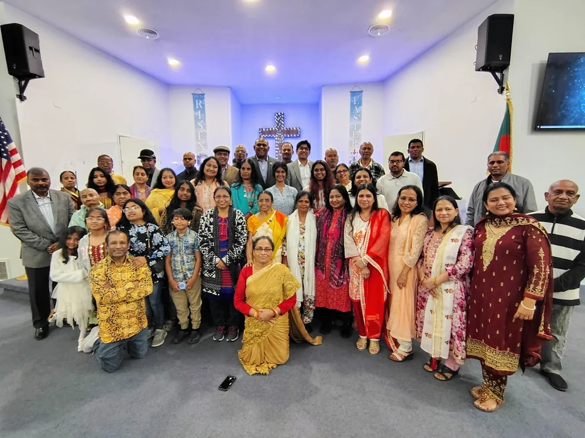

In preparation
Bible Stories
Age-aware stories designed to invite every generation into God’s Word.

GPBC DEVOTION
Growing Together in Faith
Building faith together as a family.
Family Scripture
“Start children off on the way they should go, and even when they are old they will not turn from it.”
— Proverbs 22:6 (NIV)
This Scripture continues to shape the heart of the Family Devotion resource as it is prepared.
GPBC is preparing a thoughtful resource to help households grow together in Scripture, prayer, and faith.
There is no Family reading journey available yet. We will share it here when it is ready.
Future resources
The future Family Devotion experience is being shaped around simple, welcoming ways for every generation to meet God’s Word together.
In preparation
Age-aware stories designed to invite every generation into God’s Word.
In preparation
Simple, creative ways for families to talk, make, and remember together.
In preparation
Gentle prompts to help households pray and worship together.
The Family vision
Available now
Continue meeting with God through these live GPBC resources.